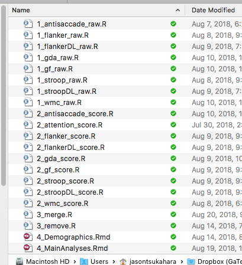
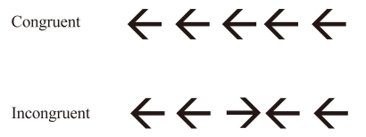

Chapter 8 Example Data Set

In the next couple of Chapters you will go over an example of how to write and organize scripts for Data Preparation. Data Preparation involves Stages 1 and 2 in the data procesing workflow diagram.
Go ahead and download the example data set
8.1 Initial Setup
In Section IV - Data Science Practices, you will learn more about the importance of organization and good practices to let you take full advantage of data analysis in R. To go ahead and get you started using R I will have you implement these data science practices without talking too much about them yet.
8.1.1 RStudio Project
RStudio has a feature called Projects. RStudio Projects allow you to keep your R environment for one project separated from another project.
Visit this page for more details on R Projects.
If you have not done so already, go ahead and create an R Project for this tutorial. Navigate to File -> New Project… ->
Choose Existing Directory if you already created an “R Tutorial” folder on your computer or New Directory -> New Project if you have not. Create the R Project in the root folder of your R Tutorial. You should now see a file called R Tutorial.Rproj, or whatever you named your project/root directory.
Open your RStudio Project. There are a couple of ways you can open an RStudio Project.
One way is to just simply open the
.Rprojfile. This will open a new R Session (and RStudio window).If you already have an RStudio window open you can navigate to the very top-right of the application window and browse different projects you have recently worked on. This is where you can also see which Project you currently have open.

8.1.2 Directory Organization
Now let’s setup your directory organization. In the directory where your .Rproj file is located, you should create the following folders:
R Scripts - A folder to put all your scripts in one place
Data Files - A folder where any data files will be stored
Results - A folder where any outputed results and figures will be stored
When conducting a study you might have other directores such as Tasks where the task files are located, or Documents where any documents such as Methods or other materials are located.
The Results directory will become relevant later when we get to Stage 3: Data Analysis.
Within the Data Files directory you should create the following folders:
Raw Data - A folder containing raw data files.
Scored Data - A folder containig scored data files.
Within the Raw Data folder you should create the following directory
- E-Merge - A folder containing E-Merged and exported .txt merged files.
This structure helps to keep clear where we are importing and outputing data files to in the data processing workflow stages.
The messy raw data files are located in the E-Merge folder.
The tidy raw data files are located in the Raw Data folder.
The scored task files are located in the Scored Data folder.
With your R Scripts and data files in the messy raw data folder, you will be able to create, re-create, and modify the tidy and scored data files as well as outputed analyses 100% by simply running your R Scripts. With a click of a button!
Go ahead and unzip the Example data set you downloaded. There are some files that are already Scored, go ahead and put these in Data Files/Scored Data. Put the other files/folders in Data Files/Raw Data/E-Merge.
One of the raw files is an E-Merged file, the other is the E-Merged file exported to a tab-delimited .txt file. There is also a folder labled subj.
We will come back to what these files are later.
8.1.3 R Scripts
For any given project, you will have multiple R Scripts at all three stages of the data processing workflow. How are you to organize them and have a convenient way to run your scripts from Stage 1: messy to tidy raw, to Stage 2: tidy raw to scored, to Stage 3: data analysis?
I very very highly recommend you just put all your R Scripts into ONE and ONLY ONE folder. That way you don’t have to go searching all over the place for different scripts. Then, I also suggest that your name them using a convention that makes sense and will organize your scripts according the the three stages of the data processing workflow.

8.1.4 Masterscript
Having a masterscript is a very convenient way to run and re-run all or just part of your analyses. Rather than opening each individual script and sourcing (executing all lines of code) each one, you can source() each script individually or all together in the masterscript. Therefore, the masterscript will only really contain lines of code that sources other scripts. It is the control center for your data analysis.
Save an R Script file in your project’s root directory (where the .Rproj file is located)
Save a new R script file as RTutorial_masterscript.R
For now, just copy and paste the following code into your masterscript. I will go over the purpose of all this in Chapter 14: Templates. However, you can see that it is basically setting up a directory structure we can use to import and output files, and corresponds to the data processing workflow stages.
## Setup ####
## Load Packages
library(here)
library(rmarkdown)
## Specify the directory tree
directories <- list(scripts = "R Scripts",
data = "Data Files",
raw = "Data Files/Raw Data",
messy = "Data Files/Raw Data/E-Merge",
scored = "Data Files/Scored Data",
results = "Results")
saveRDS(directories, here("directories.rds"))
#############
#############################################
#------ 1. "messy" to "tidy" raw data ------#
#############################################
#################################################
#------ 2. "tidy" raw data to Scored data ------#
#################################################
#############################################################
#------ 3. Create Final Merged Data File for Analysis ------#
#############################################################
###############################
#------ 4. Data Analysis ------#
###############################
rm(list=ls())8.2 Example Data: Flanker Task
Why the Flanker task? Because we love the Flanker task! Not really, but it is a good task to illustrate most of the functions you will want to use for other tasks.
Basically, on the Flanker task the subject responds to the direction of a centrally presented arrow. There are two types of trials, congruent and incongruent. On congruent trials, the arrows surrounding (flanking) the central arrow are in the same direction as the center arrow. In the incongruent condition, the arrows are facing the opposite direction.

Reaction time is slower on incongruent trials compared to congruent trials. The difference in Reaction Time is the dependent measure for this task, and we can call this score a FlankerEffect.
Our goal for the next couple of Chapters is to get a data file with each subjects score on the FlankerEffect starting from a messy raw data file.
Something